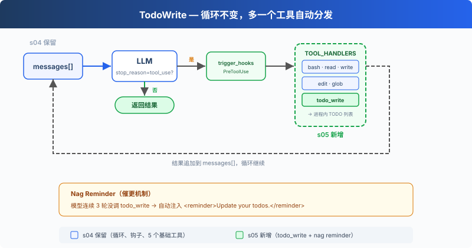

s05: TodoWrite — 没有计划的 Agent，做着做着就偏了
"没有计划的 agent 走哪算哪" — 先列步骤再动手，长任务更不容易漏项。 Harness 层: 规划 — 让 Agent 在动手之前先想清楚。
On this page
s01 → s02 → s03 → s04 → s05 → s06 → s07 → ... → s20
"没有计划的 agent 走哪算哪" — 先列步骤再动手，长任务更不容易漏项。
Harness 层: 规划 — 让 Agent 在动手之前先想清楚。
问题
给 Agent 一个复杂任务："把所有 Python 文件改成 snake_case 命名，然后跑测试，修好失败。"
Agent 开始干活，改了 3 个文件，跑了个测试，发现 2 个失败，开始修。修着修着，它忘了最初是"改成 snake_case"，测试失败把注意力全吸走了。
对话越长越严重：工具结果不断填满上下文，系统提示的影响力被稀释。一个 10 步重构，做完 1-3 步就开始即兴发挥，因为 4-10 步已经被挤出注意力了。
解决方案

保留上一章的最小 hook 结构，重点看新增的 todo_write 工具和 reminder 机制。todo_write 本身不做任何实际工作，不能读文件、不能跑命令，只是让 Agent 在动手之前先理清思路。
dispatch 机制不变，新工具仍然走 TOOL_HANDLERS[block.name] 分发。但为了演示 todo reminder，循环里加了一个计数器：连续 3 轮没调 todo_write 就注入一条提醒。
工作原理
todo_write 工具，接收一个带状态的列表，保存在当前进程内存中，同时在终端显示进度：
CURRENT_TODOS: list[dict] = []
def run_todo_write(todos: list) -> str:
global CURRENT_TODOS
CURRENT_TODOS = todos
lines = ["\n## Current Tasks"]
for t in CURRENT_TODOS:
icon = {"pending": " ", "in_progress": "▸", "completed": "✓"}[t["status"]]
lines.append(f" [{icon}] {t['content']}")
print("\n".join(lines))
return f"Updated {len(CURRENT_TODOS)} tasks"
工具定义和其他 5 个工具一起加入 dispatch map：
TOOLS = [
{"name": "bash", ...},
{"name": "read_file", ...},
{"name": "write_file", ...},
{"name": "edit_file", ...},
{"name": "glob", ...},
# s05: 新增一条
{"name": "todo_write", "description": "Create and manage a task list ...",
"input_schema": {
"type": "object",
"properties": {
"todos": {
"type": "array",
"items": {
"type": "object",
"properties": {
"content": {"type": "string"},
"status": {"type": "string", "enum": ["pending", "in_progress", "completed"]},
},
},
},
},
},
},
]
TOOL_HANDLERS["todo_write"] = run_todo_write
Nag reminder，模型连续 3 轮没调 todo_write 时，自动注入一条提醒（教学版机制，CC 源码中没有这个固定轮数逻辑）：
if rounds_since_todo >= 3 and messages:
messages.append({
"role": "user",
"content": "<reminder>Update your todos.</reminder>",
})
rounds_since_todo = 0
Agent 收到任务后的典型流程：先调 todo_write 列出所有步骤（全 pending）→ 做一个步骤，改成 in_progress → 做完改成 completed → 看下一个 pending → 继续。连续 3 轮没有调用 todo_write 时，循环会在下一次 LLM 调用前追加一条 reminder。
关键洞察：todo_write 不给 Agent 增加任何执行能力。它增加的是规划能力。
相对 s04 的变更
| 组件 | 之前 (s04) | 之后 (s05) |
|---|---|---|
| 工具数量 | 5 (bash, read, write, edit, glob) | 6 (+todo_write) |
| 规划能力 | 无 | 带状态的 TODO 列表 + nag reminder |
| SYSTEM 提示 | 通用提示 | 加入 "先计划再执行" 引导 |
| 循环 | 不变 | dispatch 不变，新增 rounds_since_todo 计数器和 reminder 注入 |
试一下
cd learn-claude-code
python s05_todo_write/code.py
试试这些 prompt：
Refactor s05_todo_write/example/hello.py: add type hints, docstrings, and a main guard（先列 3 步再执行）Create a Python package under s05_todo_write/example/demo_pkg with __init__.py, utils.py, and tests/test_utils.pyReview Python files under s05_todo_write/example and fix any style issues
观察重点：第一次工具调用是不是 todo_write？TODO 列了几步？执行过程中状态有没有从 pending 变成 in_progress / completed？
接下来
Agent 能计划了。但如果一个任务太大，比如"重构整个认证模块"，光靠 TODO 列表不够。这个任务本身就是几十个小任务的集合，放在同一个对话里会被上下文淹没。
s06 Subagent → 把大任务拆成子任务，每个子任务派一个独立的 Agent。它们有自己的干净上下文，不会互相污染。